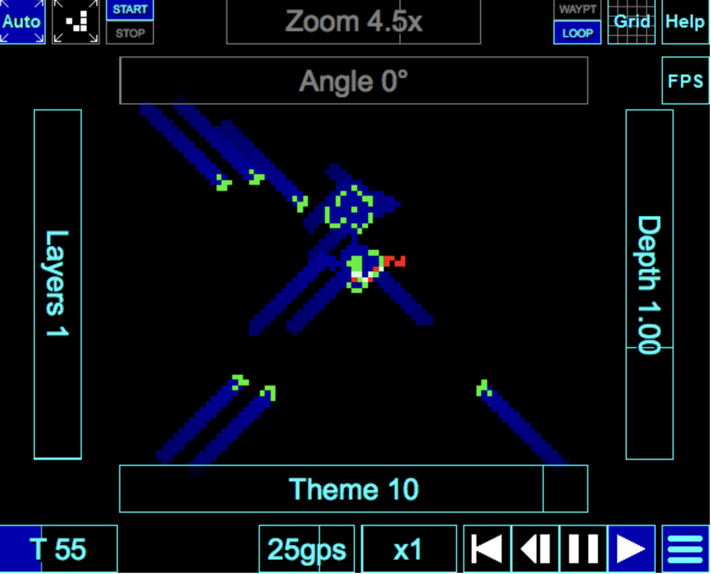

Географическая информация
Основы геоинформатики. Лекция 1
7 февраля 2025 г.
Географическая информация

- Географическая информация (ГОСТ Р ИСО 19105-2003 2004)
-
Информация об объектах и явлениях, содержащая в явном или неявном виде указание на их местоположение относительно Земли.
- Пространственная привязка (ГОСТ Р 70316-2022 (ИСО 19112:2019) 2022)
-
Описание позиции в реальном мире.
Пространственная привязка
Основные способы
- Координаты (59.926° с.ш., 30.339° в.д.)
- Индекс (191002)
- Адрес (Россия, г. Санкт-Петербург, улица Ломоносова, д.9)
- Место (Центральный район)
- Объект (корпус ИТМО)

Пространственная привязка
Вспомогательные отношения
Пространственные отношения
Метрические (600 метров от м. Владимирская)
Топологические (примыкает к детскому саду №78)
Дирекционные (на юго-восток от наб. Фонтанки)
Временные отношения (в 15 мин. пешком от Витебского вокзала)
Динамическая
Что может меняться у пространственного объекта?
Геометрия
Местоположение
Внутренняя структура

Потоковая
Географическая информация в процессе передачи.

Векторные тайлы
Потоковые данные визуализируются на устройстве-получателе.

Мультимасштабная
Географическая информация во множестве уровней детализации.


Многомерная
Трёхмерная, трёхмерно-динамическая

OpenStreetMap
OpenStreetMap (OSM) — крупнейший проект в области VGI

Неопределенная
Географическая информация, обладающая свойствами непрецизионности, неточности и нечеткости.


Синтезируемая
Географическая информация, полученная путем геосимуляций, геовычислений, геомоделирования.

